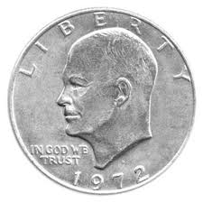
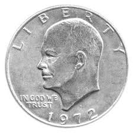
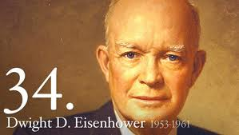
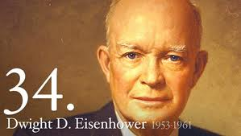
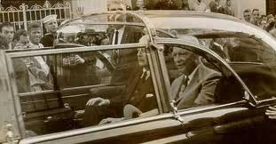
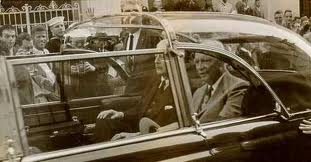
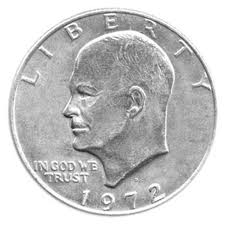

 

 

Dwight D. Eisenhower
Birthday: October 14, 1890
Birthplace: Denison, TX
College or University: U.S. Military Academy
Religion: Presbyterian
Occupation or Profession: Soldier
Military Rank: (5 Star) General of the Army
Married: Mary (Mamie) Geneva Doud
Children: Doud Dwight Eisenhower (1917-1921), John Sheldon David Doud Eisenhower
President number: 34th
Political Party: Republican
Runner Up: Adlai E. Stevenson
Vice President: Richard M. Nixon
Age at Inauguration: 62
Served: 1953-1961
Number of terms: 2
Other Offices or Commissions: Supreme Commander of the North Atlantic Treaty Organization (NATO)
Died: March 28, 1969 in Washington, DC
